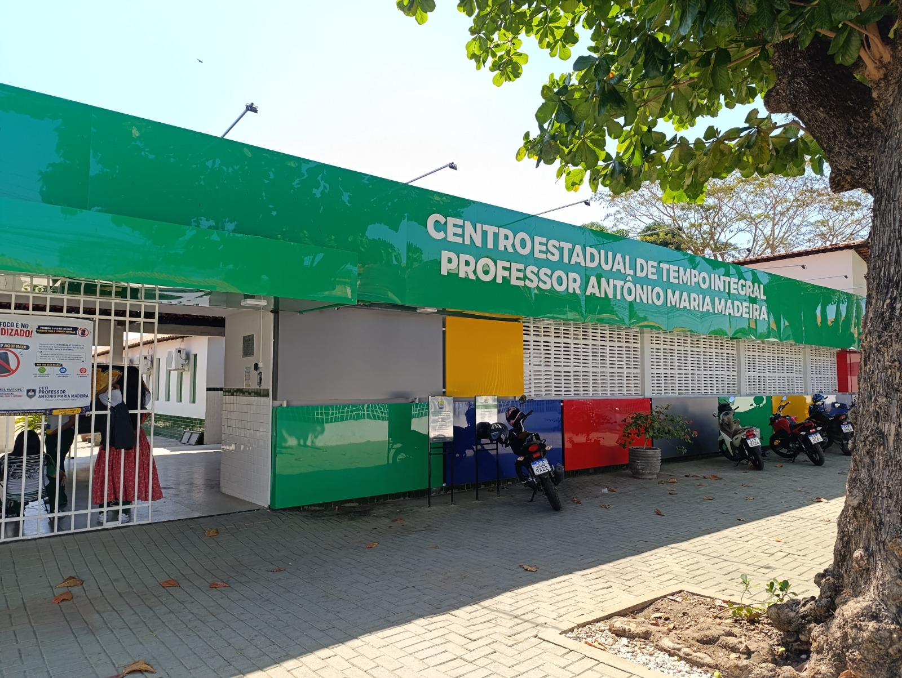

Missão
Oferecer uma educação integral, pública e de qualidade, promovendo o desenvolvimento acadêmico, social e humano dos alunos.
O CETI Professor Antônio Maria Madeira é uma instituição de ensino localizada no bairro Parque Piauí, em Teresina, que tem como propósito oferecer uma educação pública de qualidade e contribuir para a formação integral dos seus alunos.
Com uma trajetória de compromisso com a comunidade, a escola promove um ambiente acolhedor, inclusivo e voltado para o desenvolvimento acadêmico, social e cultural.
Ensino, tecnologia e formação cidadã se encontram para preparar estudantes para os desafios do presente e as oportunidades do futuro.

Oferecer uma educação integral, pública e de qualidade, promovendo o desenvolvimento acadêmico, social e humano dos alunos.
Ser referência em educação pública, com excelência no ensino, formação cidadã e impacto positivo na comunidade.
Respeito, inclusão, compromisso, ética, cidadania e valorização da diversidade orientam nossas ações todos os dias.
A educação é a ponte para um mundo de novas oportunidades.
CETI Professor Antônio Maria Madeira